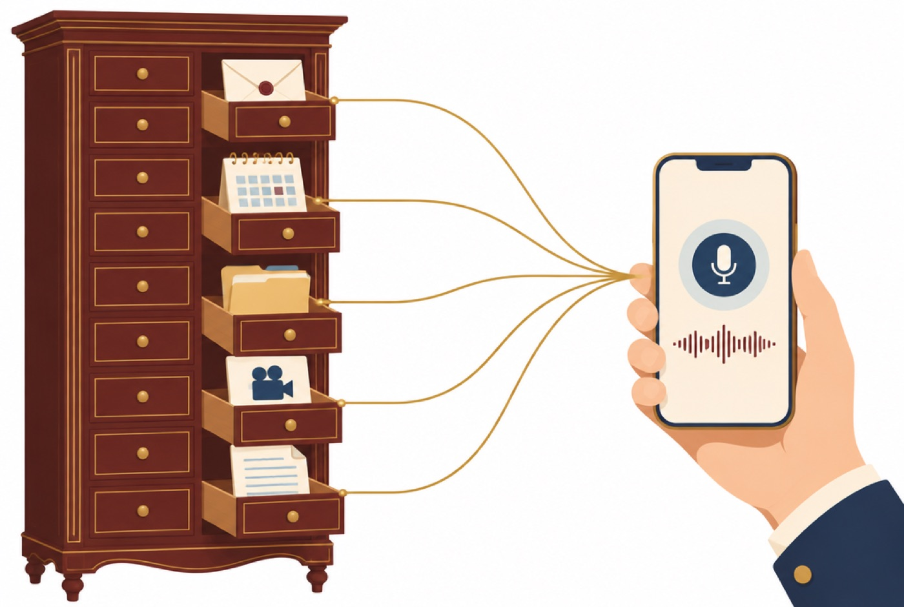
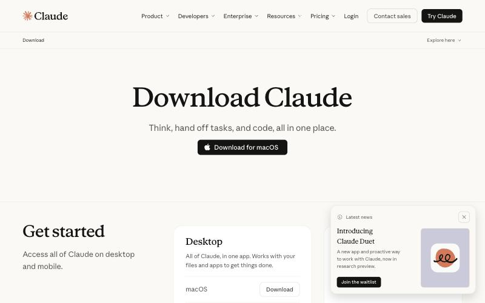
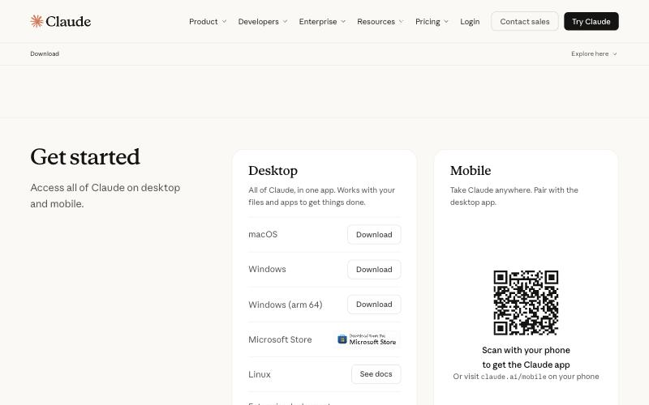
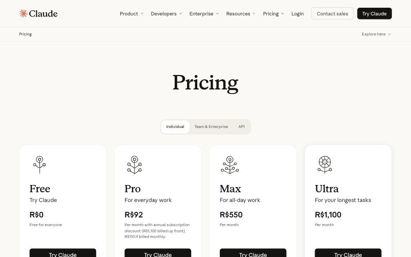
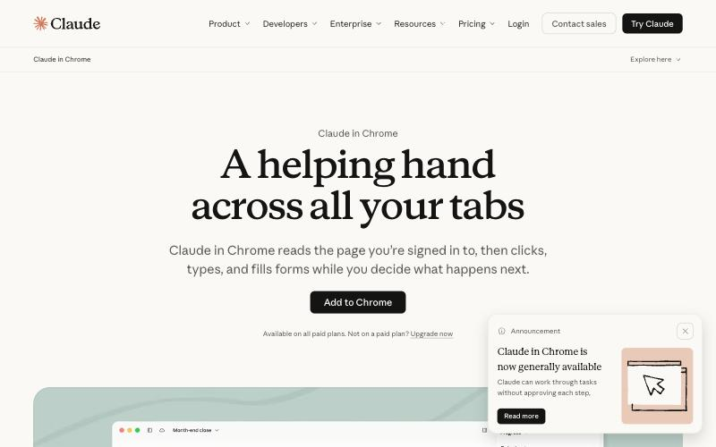
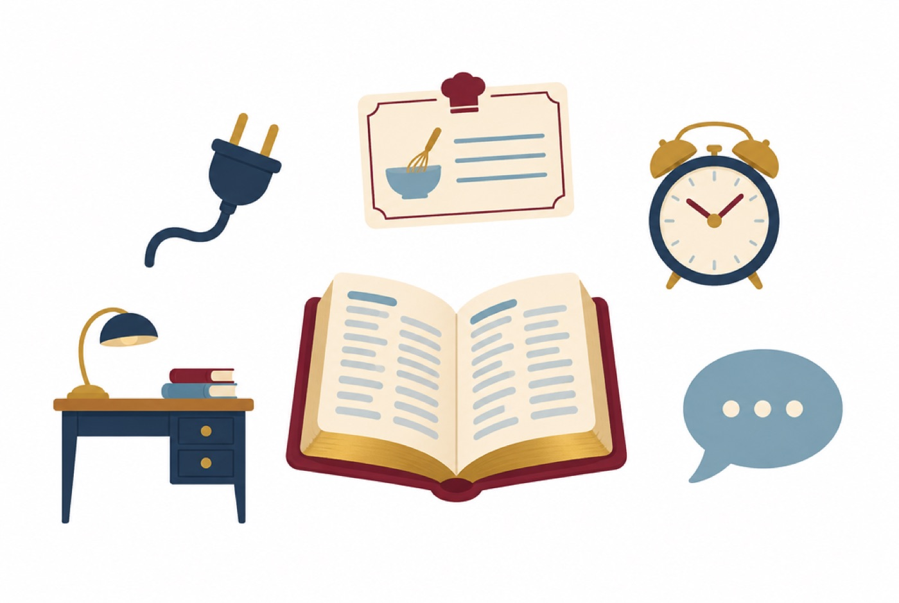
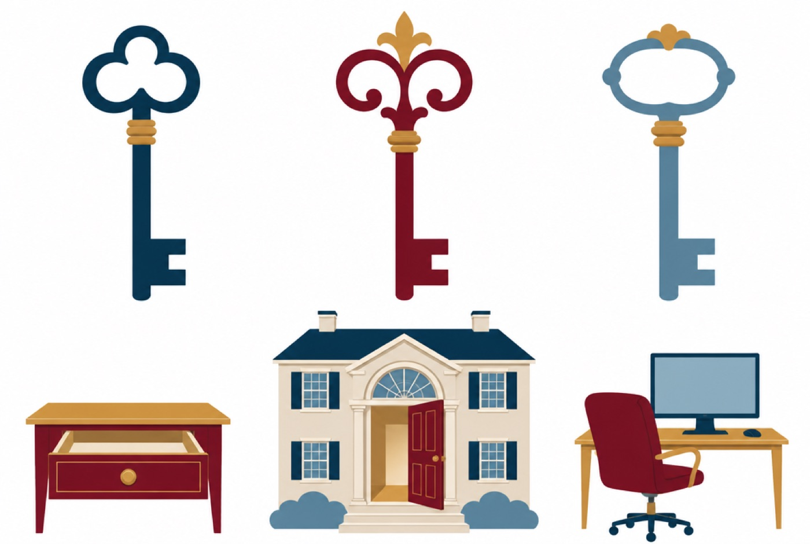
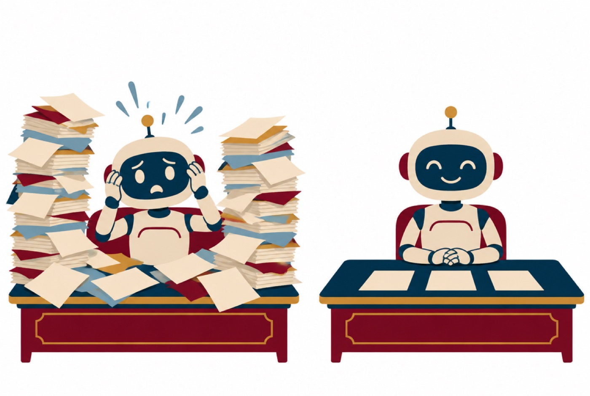
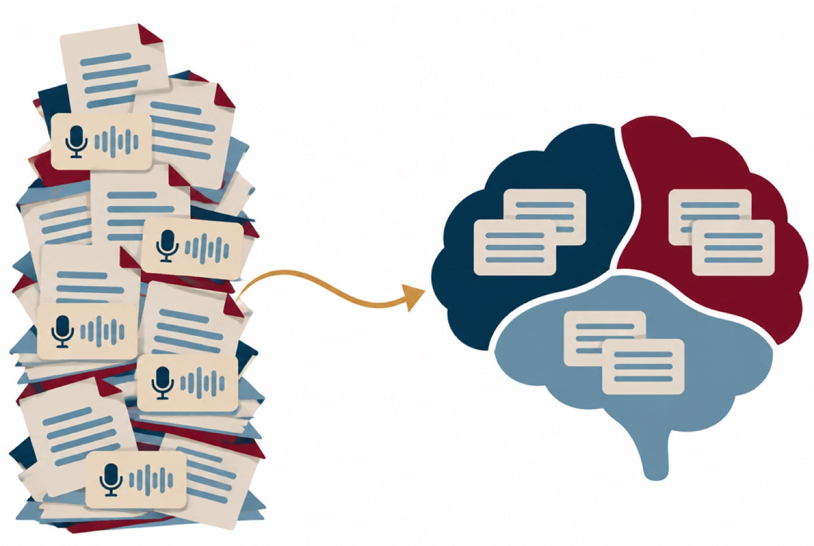
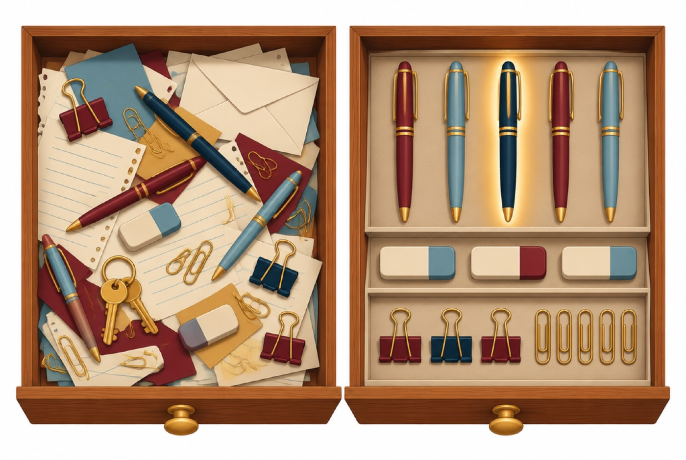

Onde está o poder do Claude: as gavetas da sua vida.
Conceito
Em uma frase
Sua vida está espalhada em várias gavetas. O Claude ajuda de verdade quando você conecta essas gavetas a ele.
Como é a sua vida hoje?
Um dia comum: correr de gaveta em gaveta.
Veja se este dia parece com o seu:
8h: você abre o e-mail para achar o endereço de um paciente que escreveu semana passada. Rola, rola, não acha.
10h: no fim de uma reunião, alguém pede: "me manda aquele documento?". Você promete mandar depois.
12h: o contador pede um comprovante. Está no Drive, no WhatsApp ou na pasta Downloads? Você abre os três.
15h: você encontra uma pessoa e combina uma conversa. Para marcar, precisa do computador, do Zoom, da agenda e do e-mail dela.
21h: deitado, você lembra do documento das 10h, que ainda não mandou.
Cada tarefa é simples, mas ir de gaveta em gaveta, cada uma num lugar, cansa e faz coisa ficar para trás.
As gavetas da sua vida
Pense em tudo o que você faz no dia. Cada coisa mora numa gaveta diferente: os e-mails numa, a agenda em outra, os documentos no Drive, as reuniões no Zoom, os arquivos baixados no computador.

Cada gaveta conectada é uma coisa que você resolve num pedido só.
Sem conexão: você vai até a gaveta
Para pegar algo numa gaveta da sua casa, você levanta, anda até ela, abre e procura. Na vida digital é igual. Você acabou de encontrar uma pessoa e precisa marcar uma reunião no Zoom:
1Abrir o computador
2Abrir o Zoom e marcar a reunião
3Procurar o e-mail da pessoa
4Copiar o link e mandar o convite
Muitas vezes isso fica para depois e não é feito.
Com conexão: a gaveta vem até você
Quando o Zoom, a agenda e o e-mail estão conectados ao Claude, você abre o Claude (no computador ou no app do celular) e pede, escrevendo ou falando:
1"Marca um Zoom com a Júlia na terça às 15h e manda o convite para ela."
2O Claude marca, acha o e-mail e te mostra o convite antes de mandar
Travou? Descubra em que gaveta a coisa está
Toda vez que você travar para fazer alguma coisa, faça duas perguntas:
Em que gaveta isso mora? "Meus documentos ficam no Drive." "Minhas reuniões ficam no Zoom."
Como o Claude alcança essa gaveta? Escolha a via (às vezes mais de uma).
Via
Para quê
Exemplo
Conector
Um app: Gmail, Agenda, Drive, Zoom, ClickUp.
"Marca a reunião no Zoom."
Pasta
Os arquivos do seu computador.
"Organiza os PDFs que estão na pasta entrada."
Skill
O seu jeito de fazer algo, guardado como receita.
"Escreve o e-mail do jeito que eu escrevo."
Chrome
Um site que não tem conector.
"Copia para uma planilha os pedidos que aparecem neste site."
Rotina
Abrir a mesma gaveta toda semana, no mesmo horário, com o computador ligado e o app aberto.
"Toda segunda às 8h, me mostra o que vence na semana."
A rotina abre a gaveta por você, no horário marcado. Se toda segunda-feira você precisa ir lá ver a mesma coisa, o Claude pode ir por você.
◆ A mão que alcança as gavetas: a aba Code
No app do Claude, a aba Code é a mão que alcança as gavetas. É por ela que o Claude abre as pastas do seu computador, que a aba Chat não alcança, e usa junto os conectores, as skills e as rotinas que você montou. A aba Cowork também mexe em arquivos, mas nesta aula a gente fica na Code. Pelo celular, dá para usar os apps conectados (Zoom, agenda, e-mail), mas não as pastas do computador.
◆ Uma gaveta por semana
Ninguém conecta todas as gavetas num dia. Você conecta uma, usa, e na semana seguinte conecta outra. Quanto mais corrida a sua rotina, mais gavetas há para conectar e mais tempo você ganha.
Guarde este prompt para usar depois do Módulo 08, quando o app já estiver instalado.
Prompt · mapear as minhas gavetas
Quero descobrir onde eu perco tempo. Me faz perguntas, uma de cada vez, sobre as tarefas que eu repito ou adio na semana.
Para cada tarefa, anota: em que app ou lugar ela mora, quantas vezes por semana eu faço e qual via resolveria (conector, pasta, skill, Chrome ou rotina).
No fim, me mostra uma tabela com as 5 gavetas que mais valem a pena conectar primeiro.
Mensagem deste módulo
Travou? Descubra em que gaveta a coisa mora e escolha a via para o Claude alcançá-la. Uma gaveta por semana.
Antes de seguir
0/3 checados
Sei explicar a ideia das gavetas com o exemplo do Zoom.
Sei as vias: conector, pasta, skill, Chrome e rotina.
Pensei na primeira gaveta que quero conectar.
Parte 1 · Módulo 02
O que instalar e o que não precisa.
Setup
Em uma frase
Você só precisa do app do Claude, de um plano pago e da extensão do Chrome.
Quase todo mundo trava antes de começar porque acha que precisa virar programador. Não precisa. Para usar o Claude no dia a dia, você precisa de um app, um plano e uma extensão.
O quê
Precisa?
Para quê
App Claude (desktop)
Obrigatório
O app tem três abas. Chat é conversa, sem acesso às suas pastas. Cowork é outro jeito de trabalhar com arquivos; nesta aula, só para o Dispatch. Code trabalha dentro das pastas do seu computador: nesta aula, a gente usa a aba Code em tudo. Baixe em claude.ai/download (Mac ou Windows).
Plano pago (Pro ou Max)
Obrigatório
A aba Code e a extensão do Chrome pedem plano pago. Quem vai usar muito, todos os dias, sente diferença no Max.
Claude in Chrome
Obrigatório nesta aula
Extensão da Chrome Web Store. Deixa o Claude clicar e preencher coisas no navegador. Funciona só no Google Chrome.
◆ Atalho
Se travar em qualquer instalação, abra o claude.ai no navegador e cole o erro. Peça: "me explica o que significa e faz por mim o que der para fazer daqui".
◆ Avançado (opcional): terminal e GitHub
Existem formas mais avançadas de usar o Claude. Uma é pelo terminal, uma parte do computador onde você digita comandos. Outra é uma configuração extra com o GitHub, um serviço que guarda cópias das suas pastas com o histórico de cada mudança.
A gente vai entrar nisso aqui? Não. Quem quiser aprender, procura um curso mais avançado. Aqui a gente está no modo IA for Dummies: tudo pelo app.
Mensagem deste módulo
App do Claude, plano pago e extensão do Chrome. O resto o Claude instala quando precisar.
Antes de seguir
0/4 checados
Instalei o app do Claude e entrei na minha conta.
Sei que a aba Code é a que mexe nas pastas do computador.
Instalei a extensão Claude in Chrome.
Sei que vou fazer tudo pelo app, sem terminal.
Parte 1 · Módulo 03
Instalar, assinar e ligar o Chrome: passo a passo.
Setup
Em uma frase
Três tarefas, na ordem: baixar o app, assinar o plano Pro e colocar a extensão no Chrome.
Faça com calma, uma tarefa de cada vez. Nos prints, o círculo dourado mostra onde clicar. As telas podem mudar um pouco com o tempo, mas os botões ficam no mesmo lugar.
1. Baixar o app do Claude no computador
No navegador, abra o endereço claude.com/download.

1
O botão grande no meio já reconhece o seu computador.
Clique no botão preto grande (no Mac aparece Download for macOS). Se preferir escolher, role a página até Desktop.

MW
M: botão para Mac. W: botão para Windows (a maioria dos computadores com Windows usa este).
No Mac: abra o arquivo baixado (na pasta Downloads), arraste o ícone do Claude para a pasta Aplicativos e abra o Claude por lá.
No Windows: abra o arquivo baixado (na pasta Downloads) e siga as telas até o fim.
Com o app aberto, clique para entrar e use o mesmo e-mail da sua conta do Claude (pode ser com o Google). Se ele mandar um código para o seu e-mail, copie o código no app.
◆ Deu certo quando
O app abre e mostra uma caixa para escrever, com as abas Chat, Cowork e Code em cima.
2. Assinar o plano Pro
A aba Code e a extensão do Chrome pedem plano pago. Os planos:

1
O Pro (destacado) é suficiente para começar. Os preços da tela são de 17/11/2026 e podem mudar.
No app do Claude, clique no seu nome ou nas suas iniciais, no canto de baixo, à esquerda.
Procure a opção de upgrade (pode aparecer como "Upgrade plan" ou "Fazer upgrade").
Escolha Pro. Se for pagar por ano, sai mais barato por mês.
Digite os dados do seu cartão você mesmo, na tela de pagamento. Nunca cole o número do cartão numa conversa com o Claude.
Feche e abra o app de novo.
◆ Não achou o botão?
Abra claude.com/pricing no navegador, entre na sua conta e clique em Try Claude embaixo do Pro.
3. Colocar a extensão no Chrome
Funciona só no navegador Google Chrome. Abra o Chrome antes de começar.
No Chrome, abra o endereço claude.com/chrome.

2
Clique em Add to Chrome.
Clique em Add to Chrome. Vai abrir a loja do Chrome.
Na loja, clique no botão azul Usar no Chrome (ou "Adicionar ao Chrome").
Vai aparecer uma janelinha perguntando se quer adicionar. Clique em Adicionar extensão.
No canto de cima, à direita do Chrome, clique no ícone de peça de quebra-cabeça. Ache o Claude na lista e clique no alfinete do lado, para ele ficar sempre à vista.
Clique no ícone do Claude e entre com a mesma conta do app.
◆ Deu certo quando
Ao clicar no ícone do Claude, abre um painel do lado direito do Chrome com uma caixa para escrever.
Mensagem deste módulo
App baixado, plano Pro assinado e extensão no Chrome. Com isso, tudo o que vem depois funciona.
Antes de seguir
0/3 checados
Baixei e abri o app do Claude, e entrei na minha conta.
Assinei o plano Pro.
Coloquei a extensão no Chrome e fixei o ícone.
Parte 1 · Módulo 04
Conhecendo o Claude: modelos, modos e limite.
Setup
Em uma frase
Você escolhe qual cérebro usar, quanta liberdade dar a ele e acompanha quanto do plano já gastou.
Três controles aparecem em toda conversa da aba Code e quase ninguém explica. Parece básico, mas é isso que decide se o Claude acerta, se ele pede licença e se o seu plano chega ao fim da semana.
1. Os modelos: qual cérebro trabalha
O Claude tem versões de tamanhos diferentes. Os nomes e números mudam com o tempo, mas a lógica é sempre a mesma: do mais potente ao mais leve. Quanto mais potente, mais ele gasta do seu plano.
Modelo
Como pensar nele
Use para
Fable (o mais potente)
O gênio da equipe. É o modelo mais inteligente e o que mais gasta do plano.
O que é muito difícil ou muito importante: um plano complexo, uma análise que os outros erraram, revisar um trabalho grande.
Opus (grande)
O especialista sênior. Pensa fundo e gasta bastante.
Estratégia, texto importante, tarefa longa com muitas etapas.
Sonnet (médio)
O profissional do dia a dia. Rápido e muito bom.
A maior parte das tarefas: e-mail, organizar, resumir.
Haiku (pequeno)
O estagiário ágil. Muito rápido e econômico.
Tarefas simples e repetidas: renomear, classificar, separar.
O seletor de modelo fica na própria conversa. Na dúvida, pergunte: "qual modelo você recomenda para esta tarefa?".
2. Os modos: quanta liberdade ele tem
O modo decide se o Claude pede licença antes de agir. Os nomes podem variar um pouco no app, mas são estes quatro:
Manual
Ele pergunta antes de cada ação: criar, mover, enviar. Você aprova uma por uma. Comece por aqui.
Aceitar edições
Ele cria, edita, move e apaga arquivos da pasta sem perguntar. Use só quando já confia na tarefa.
Planejar
Ele só pensa e te mostra o plano. Não mexe em nada até você aprovar. Ótimo antes de uma tarefa grande.
Automático
Ele trabalha sozinho do começo ao fim e só para no que for arriscado. Use quando já confia na tarefa.
◆ Regra de bolso
Tarefa nova: Planejar ou Manual. Tarefa que você já fez dez vezes e conferiu: Automático.
3. O limite de uso: o seu plano é um tanque
Todo plano tem um limite de uso. Pense num tanque de combustível que enche de novo sozinho: ele recarrega a cada poucas horas, e também existe um limite da semana.
Onde ver: nas configurações do app, na parte de uso, aparece quanto você já gastou e quando recarrega. Se não achar, pergunte ao Claude onde fica.
O que gasta mais: modelo grande, conversa muito longa e tarefas no Chrome.
Acabou o tanque? Espere recarregar ou troque para um modelo menor para tarefas simples.
◆ Isso volta na Parte 2
No módulo da janela de contexto e no de "gastar menos inteligência", você aprende a fazer o tanque durar a semana inteira.
Mensagem deste módulo
Modelo é o tamanho do cérebro, modo é quanta liberdade ele tem, limite é o tanque. Comece no manual, com o modelo médio, e guarde o Fable para o que é difícil de verdade.
Antes de seguir
0/3 checados
Sei quando usar Fable, Opus, Sonnet e Haiku.
Deixei o modo em Manual para começar.
Sei onde ver quanto do plano já gastei.
Parte 1 · Módulo 05
Dicionário de bolso.
Setup
Em uma frase
Dez palavras que vão aparecer a aula inteira, explicadas sem complicação.
Estas palavras aparecem na aula toda. Não precisa decorar: volte aqui sempre que travar em uma delas.

Conector é a ponte, skill é a receita, rotina é o despertador, janela de contexto é a mesa.
Prompt
O pedido que você escreve (ou fala) para o Claude. Igual a um bilhete para um assistente.
Conector
Uma ponte entre o Claude e outro app, como o Gmail ou o Google Drive. Com ela, o Claude lê e organiza as coisas lá dentro.
MCP
O nome técnico dos conectores. É o "padrão de tomada" que permite ligar o Claude a outros apps. Quando alguém falar "instala o MCP do Zoom", quer dizer "liga o conector do Zoom".
Skill
Uma receita salva. Ensina o Claude a fazer uma tarefa do seu jeito, sempre igual, sem você explicar de novo.
Rotina
Uma tarefa com hora marcada. O Claude faz sozinho, todo dia ou toda semana, como um despertador que trabalha.
Janela de contexto
A mesa de trabalho do Claude: tudo o que ele está enxergando naquela conversa. Quando a mesa lota, ele fica mais lento e esquece o começo. A Parte 2 tem um módulo só sobre isso.
Token
Um pedacinho de texto. É a unidade que mede quanto o Claude leu e quanto do seu plano você gastou.
CLAUDE.md
Um bilhete fixo dentro da sua pasta, dizendo ao Claude quem você é e como gosta de trabalhar. Ele lê toda vez.
Fork
Uma cópia da conversa, para seguir por outro caminho sem estragar a original.
Dispatch
Mandar uma tarefa pelo celular para o Claude fazer no seu computador.
◆ Travou numa palavra?
Pergunte ao próprio Claude: "me explica o que é [palavra] como se eu nunca tivesse usado computador". Ele não se cansa de explicar.
Mensagem deste módulo
Prompt é o pedido, conector é a ponte, skill é a receita, rotina é o despertador. O resto você pergunta.
Antes de seguir
0/2 checados
Li as 10 palavras.
Sei que posso voltar aqui quando travar.
Parte 1 · Módulo 06
Uma pasta para o Claude morar.
Setup
Em uma frase
Primeiro você cria a pasta no computador. Depois abre essa pasta no Claude e ele monta o resto.
O Claude trabalha melhor quando sabe onde as coisas ficam. Em vez de abrir conversa solta toda vez, crie uma pasta principal e trabalhe sempre a partir dela.
Passo 1: criar a pasta no computador (você mesmo)
Para trabalhar com arquivos, o Claude precisa que você escolha uma pasta logo ao abrir a conversa. Então a pasta tem que existir antes. Crie pelo próprio computador:
No Mac
Abra o Finder → clique em Documentos → clique com o botão direito num espaço vazio → Nova Pasta → dê o nome Claude.
No Windows
Abra o Explorador de Arquivos → clique em Documentos → botão direito num espaço vazio → Novo → Pasta → dê o nome Claude.
Passo 2: abrir a pasta no Claude
Abra o app do Claude e vá na aba Code. Embaixo da caixa de mensagem, confira que está em Local (não em Nuvem), clique no botão da pasta → Abrir pasta → Documentos → Claude. Pronto: nesta conversa, o que ele criar fica dentro dela. Em cada conversa nova, confira se a pasta Claude está selecionada. No Mac pode aparecer um aviso pedindo acesso à pasta Documentos: clique em Permitir.
Passo 3: o Claude monta o resto
Cole o prompt abaixo na conversa. O Claude cria as subpastas principais e escreve o seu CLAUDE.md. As subpastas de dentro você cria quando precisar.
Como a pasta vai ficar
Claude/← pasta principal, abre no app
├── CLAUDE.md← quem você é, como gosta que ele trabalhe
├── cerebro/← seu segundo cérebro (pilar 1)
│ ├── trabalho/
│ ├── mentoria/
│ └── pessoal/
├── conhecimento/← o material bruto: transcrições, reuniões
├── projetos/
│ ├── lancamento-novembro/
│ │ └── CLAUDE.md ← regras só deste projeto
│ └── imposto-de-renda/
└── entrada/← joga aqui o que ainda não tem lugar
CLAUDE.md
Um arquivo de texto que o Claude lê no início de toda conversa naquela pasta. Coloque ali seu cargo, seu jeito de escrever, o que ele nunca deve fazer. É o "manual de você".
Uma pasta por projeto
Cada projeto tem o próprio contexto. Assim o Claude não mistura o lançamento A com o B.
Como usar os quadros escuros: clique em Copiar, cole na conversa do Claude e troque o que estiver [em amarelo] pelo seu caso.
Prompt · montar a pasta
Dentro desta pasta, cria as subpastas cerebro, conhecimento, projetos e entrada. Depois me faz 8 perguntas curtas sobre quem eu sou, meu trabalho e como gosto de receber respostas, e com as minhas respostas escreve o CLAUDE.md da pasta principal.
◆ Nunca
Não cole senha nem número de cartão no meio da conversa nem dentro do CLAUDE.md.
Mensagem deste módulo
Uma pasta principal, um CLAUDE.md que te descreve e uma pasta por projeto. É isso que faz o Claude parar de começar do zero.
Antes de seguir
0/3 checados
Criei a pasta "Claude" em Documentos e abri essa pasta no app.
Tenho um CLAUDE.md com quem eu sou e como gosto de trabalhar.
Entendi por que cada projeto tem a própria pasta.
Parte 1 · Módulo 07
Quanto acesso dar: as 3 chaves.
Setup
Em uma frase
Você escolhe quanto do seu computador o Claude pode ver: uma pasta, tudo ou a tela.
Pense no Claude como um assistente que você acabou de contratar. A pergunta é quantas chaves você entrega para ele. São três níveis, e cada um serve para um tipo de tarefa.

A gaveta (uma pasta), a casa (o computador todo) e a cadeira (a sua tela).
1 · A pasta
Uma pasta. Você escolhe a pasta ao abrir a conversa e o Claude trabalha nela. Para ler ou mexer em qualquer coisa fora dela, ele pede a sua permissão, e você pode negar. É o padrão para o dia a dia: um projeto, uma pasta.
2 · A casa
O computador todo. Você abre o Claude na sua pasta de usuário (a que tem o seu nome) e ele enxerga Downloads, Área de Trabalho, Documentos, tudo. Serve para faxina geral, como a última atividade da Parte 3, ou para achar aquele PDF que você baixou mês passado.
3 · A cadeira
A sua tela. O Claude vê a tela e mexe o mouse e o teclado, abrindo programas como se fosse você. Esse recurso ainda está em teste, vem desligado e não vamos usar nesta aula. O Claude in Chrome é a versão disso dentro do navegador, e esse a gente usa. Serve para tarefas em programas e sites que não têm outro jeito de conectar.
◆ Cuidado com a chave da casa
Com acesso ao computador todo, ele vê tudo, inclusive o que você não queria mostrar: documentos pessoais, um arquivo de texto com senhas anotadas. Use para a faxina e volte para a gaveta depois.
◆ O que tranquiliza
Ele pede licença no modo Manual. Antes de apagar, mover ou enviar alguma coisa, o Claude pergunta, e você pode negar. Nos outros modos, não conte com isso.
A chave volta. Você troca a pasta ou fecha o acesso quando quiser.
Regra de bolso: comece pela gaveta e só suba de nível quando a tarefa pedir.
Mensagem deste módulo
Gaveta para o dia a dia, casa para a faxina, cadeira para os programas sem conexão. Comece sempre pela gaveta.
Antes de seguir
0/3 checados
Sei explicar a diferença entre dar uma pasta e dar o computador.
Sei que o Chrome e o controle de tela são o nível "cadeira".
Vou começar com a gaveta: uma pasta por projeto.
Parte 1 · Módulo 08
Teste de 5 minutos.
Checklist
Em uma frase
Quatro testes rápidos para saber se está tudo ligado.
Antes de ir para os pilares, confirme que está tudo ligado. Se os quatro testes abaixo funcionarem, você está pronto para a aula.
1 · Pasta
Aba Code → escolha sua pasta "Claude" → pergunte "o que tem nesta pasta?". Ele deve listar as subpastas.
2 · Conectores
No app, abra a área de conectores (fica junto de plugins e skills; se não achar, procure "Conectores" nas configurações) e conecte Gmail, Google Agenda e Google Drive. Teste: "o que tenho na agenda amanhã?"
3 · Chrome
Abra a extensão, faça login e peça: "abre o site do clima e me diz a previsão de amanhã".
4 · Permissões
Quando o Claude pedir permissão para uma ação, leia antes de aceitar. No começo, deixe no modo Manual, que pergunta antes de agir (Módulo 04 desta parte: Conhecendo o Claude).
◆ Regra de ouro
Para qualquer coisa que apaga, envia ou paga, peça o plano primeiro: "me mostra o que vai fazer antes de fazer".
Mensagem deste módulo
Pasta, conectores, Chrome e permissões funcionando. Daqui para frente é só método.
Pronto para a Parte 2
0/4 checados
O Claude enxerga minha pasta.
Gmail, Agenda e Drive estão conectados.
A extensão do Chrome respondeu.
Sei pedir o plano antes de qualquer ação que apaga ou envia.
Parte 2 · Módulo 01
Ser produtivo com IA tem três pilares.
Conceito
Em uma frase
O Claude rende quando sabe sobre você, usa a ferramenta certa e trabalha junto com os seus apps.
O Claude não fica bom porque você escreve prompts melhores. Ele fica bom quando sabe sobre você, sabe usar as ferramentas certas e se conecta aos assistentes que você já usa.
Pilar 1
Conhecimento
O que você sabe, organizado num segundo cérebro que o Claude consulta sem se perder.
Pilar 2
Ferramentas
Conectores, skills, rotinas e o Chrome. E saber qual usar para cada coisa.
Pilar 3
Assistentes
Os apps que já trabalham por você: organizador de tarefas (Notion, ClickUp) e transcritor de reuniões (Fathom).
Para lembrar
C · F · A
CConhecimento: o que ele sabe sobre você.
FFerramentas: como ele age no mundo.
AAssistentes: quem trabalha junto com ele.
Para onde isso está indo
Hoje você conecta os assistentes ao Claude. A tendência é o próprio Claude virar o seu assistente: ele lê a reunião, cria a tarefa, lembra você e cobra o prazo. Quem monta os três pilares agora chega lá primeiro.
Mensagem deste módulo
Conhecimento, ferramentas e assistentes. Se o Claude está entregando pouco, um dos três está faltando.
Antes de seguir
0/3 checados
Sei dizer os três pilares de cabeça.
Sei qual dos três está mais fraco na minha rotina hoje.
Entendi que prompt bom não substitui contexto bom.
Parte 2 · Módulo 02
Janela de contexto: a mesa do Claude.
Conceito
Em uma frase
O Claude relê a conversa inteira a cada mensagem. Quanto mais limpa a conversa, melhor ele trabalha.
Antes dos pilares, um conceito que explica quase tudo o que vem depois. A janela de contexto é a mesa onde o Claude trabalha: tudo o que está em cima dela, ele enxerga. O que não cabe, cai.

Mesa lotada, Claude perdido. Mesa limpa, Claude esperto.
O que ocupa a mesa
Cada mensagem sua e cada resposta dele, desde o começo da conversa.
Cada arquivo que ele abriu, cada e-mail que ele leu.
As skills que ele carregou e o seu CLAUDE.md.
A mesa é medida em tokens, que são pedacinhos de texto (menores que uma palavra). A cada mensagem nova, o Claude relê a mesa inteira. Numa conversa de três horas, um simples "ok, muda a cor do botão" custa a leitura das três horas.
Por que isso importa
Mesa lotada
Ele fica mais lento, gasta mais do seu plano e começa a esquecer coisas que você disse no começo.
Mesa limpa
Só o que importa para a tarefa. Respostas melhores e o plano dura a semana inteira.
Quatro hábitos para manter a mesa limpa
/compact
Digite /compact e o Claude resume a conversa e continua dali. Use quando a tarefa ainda é a mesma, mas a conversa ficou longa.
Conversa nova
Mudou de assunto, abre outra conversa. Começa leve.
CLAUDE.md
O que você repete em toda conversa vai para o CLAUDE.md, e você para de gastar mesa explicando.
Fork
Uma cópia da conversa até aquele ponto, que segue por outro caminho. Veja abaixo.
Fork: duas tarefas com a mesma mesa
Você passou uma hora explicando um projeto e a conversa ficou ótima. Agora quer fazer duas coisas com esse contexto: o e-mail e a página. Se fizer as duas na mesma conversa, uma suja a mesa da outra. Se abrir conversa nova, perde o contexto. O fork resolve: ele copia a conversa e você leva cada tarefa num galho.
Na conversa boa, procure a opção Fork no menu da conversa, na barra lateral.
O app cria uma conversa nova que já sabe tudo o que a original sabia.
Faça o e-mail num galho e a página no outro. A conversa original fica intacta.
Atenção: o fork copia a conversa, não os arquivos. Se os dois galhos editarem o mesmo arquivo, um passa por cima do outro.
Use para
Testar dois caminhos (versão A e versão B), fazer duas entregas do mesmo contexto ou arriscar uma mudança sem estragar o que já está bom.
Não use para
Assunto novo. Aí é conversa nova, mesa vazia.
◆ Guarde esta ideia
Tudo o que vem a seguir (segundo cérebro, gaveta organizada, skills) existe para colocar menos coisa e coisa mais certa em cima da mesa.
Mensagem deste módulo
O Claude relê a mesa inteira a cada mensagem. Mesa limpa, Claude esperto. Mesa lotada, Claude caro e esquecido.
Antes de seguir
0/3 checados
Sei explicar o que é a janela de contexto com a imagem da mesa.
Sei o que é um token.
Sei quando usar /compact e quando abrir conversa nova.
Sei fazer um fork para levar o mesmo contexto para duas tarefas.
Parte 2 · Módulo 03
Conhecimento acumulado x segundo cérebro.
Conhecimento
Em uma frase
Guardar tudo é o começo. O segundo cérebro guarda só a ideia, uma vez, e o Claude entende muito mais rápido.
Juntar transcrições numa pasta é o primeiro passo, e ele já ajuda. Mas uma pilha de transcrições é conhecimento acumulado. O segundo cérebro é o passo seguinte: a mesma pilha transformada em ideias curtas, uma por nota, sem repetição.

A pilha de transcrições vira poucas fichas, cada uma no seu lobo.
Acumulado
Segundo cérebro
O que é
A pasta com tudo: transcrições de reunião, aulas, documentos inteiros.
Notas curtas com a sua premissa fundamental sobre cada assunto.
O Claude lê
A mesma ideia várias vezes, misturada com conversa sobre outros assuntos.
A ideia uma vez, já com os exemplos.
Gasta
Muita mesa.
Pouca mesa.
Serve para
Ser a matéria-prima. Nunca jogue fora.
Ser o que o Claude consulta no dia a dia.
Um exemplo: o personal statement
Em 20 reuniões de mentoria, você repetiu a mesma coisa: o personal statement (e a carta de recomendação) precisa contar uma história, e não listar conquistas.
Acumulado
O Claude abre as 20 transcrições. São perto de 170 mil palavras, e a sua premissa aparece 20 vezes, cada vez dita de um jeito, no meio de uma hora de conversa sobre outros assuntos. Ele gasta a mesa toda e ainda pode se confundir.
Segundo cérebro
O Claude abre uma nota de 150 palavras: a premissa, por que ela importa e dois exemplos. Ele entende o que precisa fazer e sobra mesa para o trabalho.
cerebro/mentoria/personal-statement-conta-uma-historia.md# O personal statement conta uma históriaPremissa: quem lê lembra de uma história, não de uma lista.
Por quê: o avaliador lê centenas; a lista some, a cena fica.
Exemplos: mentoria de 12/03 (a cena do plantão),
mentoria de 02/05 (a virada para a pesquisa)
Vale também para: carta de recomendação
Fonte: 20 mentorias, mar a nov/2026
◆ Uma ideia, uma nota curta
O segundo cérebro é o seu conhecimento resumido ao mínimo: cada ideia vira o menor texto que ainda carrega o que você pensa. É a base para o Claude escrever, responder e decidir do seu jeito.
Os lobos do cérebro
Separe o cérebro em lobos (como as partes do cérebro de verdade, cada uma cuidando de um assunto), um para cada área da sua vida. Assim o Claude consulta só o lobo que interessa à tarefa.
cerebro/
├── trabalho/← decisões, processos, o que funciona nos lançamentos
├── mentoria/← o que você ensina e repete para os alunos
├── pessoal/← preferências, saúde, viagens, família
└── indice.md← uma linha por nota: o que ela diz
Mensagem deste módulo
Transcrição é matéria-prima. Segundo cérebro é a sua premissa, dita uma vez, organizada por lobo. O Claude gasta muito menos para entender o que você quer.
Antes de seguir
0/3 checados
Sei a diferença entre conhecimento acumulado e segundo cérebro.
Sei explicar por que 20 transcrições gastam mais que uma nota.
Escolhi os lobos do meu cérebro.
Parte 2 · Módulo 04
De onde vem o conhecimento.
Conhecimento
Em uma frase
Seus vídeos, suas reuniões e suas fotos já são o material do seu segundo cérebro.
A matéria-prima do cérebro já existe: está nos seus vídeos, nas suas reuniões e nas suas fotos. Três fontes.
Fonte 1: um canal do YouTube
A maioria dos vídeos do YouTube já tem legenda, inclusive as automáticas. O Claude baixa essas legendas e transforma em texto. Você só precisa passar o identificador do canal.
Onde acharID do canal
Abra o canal no YouTube → clique em "…mais" na descrição.
Role até Compartilhar canal → Copiar ID do canal.
O ID começa com UC. O endereço com @nome também serve.
Prompt · transcrever canal
Transcreve todos os vídeos do canal do YouTube [COLE O ID OU O @ DO CANAL] usando as legendas que o próprio YouTube já tem.
Salva um arquivo .md por vídeo em conhecimento/transcricoes-youtube/, com título, data, link e o texto.
No fim, cria um índice.md com uma linha por vídeo dizendo o assunto principal. Me avisa quais vídeos não tinham legenda.
Começa pelos 10 vídeos mais recentes e me mostra antes de seguir.
Ele vai pedir permissão para instalar uma ferramenta que baixa as legendas. Pode aceitar.
◆ Exemplo real
O canal do Meta-Analysis Academy virou base assim: 430 vídeos varridos, 360 com legenda pronta. Hoje o Claude escreve textos de venda e responde aluno usando o que já foi ensinado em aula.
Fonte 2: as suas reuniões
Cada reunião gravada pelo Fathom vira texto. Com o conector do Fathom ligado, o Claude lê as transcrições direto. A primeira atividade da Parte 3 monta uma rotina que faz isso todo dia e alimenta o cérebro sozinha.
Fonte 3: as suas fotos
Para criar posts, o problema nunca é falta de foto. É achar a foto certa. Jogue as fotos numa pasta do Drive e peça para o Claude olhar cada uma e descrever.
Exemplo realFotos de um evento presencial
As fotos do evento foram indexadas com a descrição de cada cena: jantar VIP, pessoas fazendo networking, palco, plateia cheia, credenciamento. Também entrou o nome de quem aparece em cada foto.
Agora dá para pedir: "me acha 3 fotos de networking com gente sorrindo, na horizontal, para um carrossel", e o Claude devolve os links.
Prompt · indexar fotos
Olha cada foto da pasta [PASTA DO DRIVE] e monta uma planilha com: link, descrição da cena em 1 frase, quem aparece (se eu tiver dito o nome), clima (formal, descontraído, emocionante), orientação (vertical/horizontal) e para que tipo de post ela serve.
Se não souber o nome de alguém, escreve "não identificado". Não invente nomes.
◆ Cuidado com nomes
O Claude não reconhece rosto. Os nomes vêm de você: da legenda, do nome do arquivo ou de uma lista que você passar.
Mensagem deste módulo
YouTube, reuniões e fotos já te dão a matéria-prima quase de graça. O trabalho é transformar em texto com índice.
Antes de seguir
0/3 checados
Sei achar o ID de um canal e pedir a transcrição.
Sei que as reuniões entram pelo Fathom.
Sei indexar uma pasta de fotos para achar a foto certa depois.
Parte 2 · Módulo 05
Ache a caneta azul: a gaveta organizada.
Conhecimento
Em uma frase
Base arrumada, Claude rápido. Base bagunçada, Claude perdido.
O Claude consegue consultar uma base enorme, como o seu Google Drive inteiro. Mas o trabalho que ele tem para achar alguma coisa depende de como a base está arrumada.

Na gaveta organizada, a caneta azul está à vista.
A imagemA caneta azul
Gaveta bagunçada: você pede a caneta azul e o Claude precisa tirar tudo da gaveta, olhar item por item e torcer para achar. Gasta mesa, demora e às vezes volta com a caneta preta.
Gaveta organizada: tem a caixa das canetas, a parte das borrachas, a parte dos clipes. Ele vai direto na caixa das canetas e pega a azul.
O que faz uma gaveta organizada
Poucas pastas
No máximo 8 pastas principais, por assunto. Ele decide rápido onde procurar.
Nomes que explicam
2026-11-12_contrato-fornecedor_v2.pdf em vez de Sem título (3).pdf. Ele acha pelo nome, sem abrir.
Um índice
Uma planilha ou um LEIA-ME em cada pasta principal dizendo o que tem lá. Ele lê o índice primeiro e abre só o que precisa.
Uma entrada
Uma pasta "Entrada" para o que ainda não tem lugar. A bagunça fica num lugar só.
Exemplo realProvas sociais do Meta-Analysis Academy
Os depoimentos e resultados dos alunos estavam espalhados. Eles foram arrumados no Drive em gavetas, uma caixa para cada tipo de resultado e, dentro dela, uma pasta por aluno:
PROVAS SOCIAIS MAA/
├── HACKATHON/← uma pasta por aluno
├── RESEARCH FELLOWSHIP/← pastas numeradas: 01 - Nome, 02 - Nome...
└── GUIDELINES/← alunos que publicaram em diretrizes
Com a gaveta arrumada, o Claude achou cada caneta azul sem esforço: em pouco tempo, ele montou uma página com os resultados dos alunos a partir dessas pastas. Veja: maa-alunos.netlify.app.
Indexar antes de arrumar
O primeiro passo é dar uma ficha para cada arquivo, sem mexer em nada. A arrumação completa está na Parte 3.
Prompt · indexar uma pasta do Drive
Lê a pasta [NOME OU LINK DA PASTA] do meu Google Drive.
Monta uma planilha-índice com uma linha por arquivo: nome, link, tipo, data, o que é (1 frase) e quando eu usaria.
Não move, não renomeia e não apaga nada. Só lê e cataloga.
Mensagem deste módulo
Quanto mais arrumada a base, menos o Claude gasta para achar a caneta azul. Poucas pastas, nomes que explicam e um índice.
Antes de seguir
0/3 checados
Sei explicar a imagem da caneta azul.
Sei as 4 regras da gaveta organizada.
Sei pedir um índice sem que o Claude mexa nos arquivos.
Parte 2 · Módulo 06
Pilar 2: por onde o Claude opera.
Ferramentas
Em uma frase
Conector, skill, rotina e Chrome: quatro jeitos de o Claude trabalhar, cada um para uma coisa.
São quatro ferramentas e elas não são intercambiáveis. Saber qual usar é metade da produtividade.
Ferramenta
O que é
Use quando
Exemplo
Conector
Uma ligação direta com um app (Gmail, Drive, Agenda, Notion, ClickUp, Fathom). Ele lê e escreve lá dentro sem abrir o navegador.
O app tem conector. É o caminho mais rápido e mais barato.
"Arquiva todas as newsletters da semana."
Skill
Uma receita salva: um arquivo que ensina o Claude a fazer uma tarefa do seu jeito, sempre igual.
Você repete a mesma tarefa e cansou de explicar.
Skill de e-mail; skill de aula (esta página foi feita com uma).
Rotina
Uma tarefa agendada que roda sozinha num horário, sem você abrir conversa.
A tarefa tem hora certa: todo dia, toda segunda.
Todo dia às 7h: o que vence hoje e o que ficou combinado ontem.
Claude in Chrome
O Claude controlando o seu navegador: clica, digita, rola, baixa.
O site não tem conector. É o último recurso.
Copiar os inscritos de uma plataforma para uma planilha.
Conectores que valem a pena
Cada conector abre uma gaveta. Alguns que fazem diferença no dia a dia de quem é médico e pesquisador:
Conector
Gaveta que abre
Exemplo de pedido
PubMed
Os artigos científicos da base PubMed.
"Busca os ensaios clínicos dos últimos 5 anos sobre [tema] e me faz uma tabela com autor, ano e resultado principal."
Gmail
Seus e-mails.
"Quais e-mails desta semana precisam de resposta minha?"
Google Agenda
Seus compromissos.
"O que eu tenho amanhã? Tem algum buraco de 1 hora?"
Google Drive
Seus documentos e planilhas.
"Acha o contrato que assinei em março."
Zoom
Suas reuniões online.
"Marca um Zoom com a Júlia na terça às 15h."
Fathom
As gravações e transcrições das suas reuniões.
"O que eu prometi na reunião de ontem?"
ClickUp ou Notion
Suas tarefas e anotações.
"Cria a tarefa de mandar o artigo até sexta."
Canva
Suas artes e apresentações.
"Faz uma arte de convite para a aula de quinta."
Higgsfield
Criação de imagens e vídeos.
"Cria uma ilustração para a capa da aula."
A lista cresce toda semana. Para ver todos, abra a área de conectores do app e navegue pelo catálogo. Ou pergunte ao Claude: "existe conector para [app que eu uso]?".
◆ A ordem de escolha
Conector → se não existe, Chrome. Se você vai repetir, vira skill. Se tem hora certa, vira rotina.
Como criar uma rotina
Peça no chat, com dia e hora. O Claude cria a rotina e ela aparece na lista de tarefas agendadas do app, onde você pode pausar ou editar.
Prompt · criar rotina
Cria uma tarefa agendada que roda de segunda a sexta às 7h: lê minha agenda do dia, os e-mails não lidos que precisam de resposta minha e as tarefas atrasadas, e me entrega um resumo de 10 linhas.
◆ Detalhe prático
No app, a rotina aparece como Tarefa agendada. Ela só roda com o computador acordado e o app do Claude aberto; se perdeu o horário, roda uma vez quando você abrir o app. Depois de criar, abra a lista de tarefas agendadas, clique em Rodar agora e, a cada pedido de permissão, escolha permitir sempre. Sem isso, a rotina fica parada esperando a sua aprovação.
Mensagem deste módulo
Conector para apps, Chrome para o resto, skill para o que se repete e rotina para o que tem hora.
Antes de seguir
0/3 checados
Sei explicar a diferença entre conector, skill, rotina e Chrome.
Sei que o Chrome é o último recurso.
Sei pedir uma rotina com dia e hora.
Parte 2 · Módulo 07
Skills: o contexto que anda com você.
Ferramentas
Em uma frase
Uma skill é uma receita que você salva uma vez e usa em qualquer conversa. A melhor guarda também o porquê das suas decisões.
Uma skill é um contexto que você carrega para qualquer conversa. Você não precisa voltar naquela janela antiga em que explicou tudo sobre o seu produto. Chama a skill e o Claude já sabe.
Cruzar duas skills
A graça aparece quando você junta duas. Uma skill sabe o quê (os fatos do seu produto). A outra sabe como (a estrutura de um bom e-mail).
1Skill do produtoos fatos: programa, preço, dúvidas frequentes
+
2Skill de e-maila forma: estrutura e tom
3E-mail certo, em qualquer conversasem reexplicar nada
Prompt · cruzar skills
Usa a skill do [MEU PRODUTO] para os fatos e a skill de e-mail para a estrutura. Escreve o e-mail de abertura de inscrições para a lista de espera.
◆ Exemplo real
A skill do Meta-Analysis Academy guarda o programa, os preços, as dúvidas comuns dos alunos. A skill de e-mail guarda a estrutura dos e-mails. Em qualquer conversa, as duas juntas escrevem o e-mail do lançamento sem ninguém reexplicar o produto.
Da conversa boa para a skill
Sabe aquela conversa em que você explicou tudo, corrigiu o Claude dez vezes e no fim ficou perfeito? Ela fica presa naquela conversa: cada conversa nova começa sem saber nada disso. Transforme em skill.
Na conversa boa, cole o prompt abaixo.
O Claude cria o arquivo da skill.
Leia a skill. Não pule este passo.
Prompt · transformar em skill
Transforma tudo o que a gente construiu nesta conversa numa skill pessoal, que funcione em qualquer pasta. Inclui as correções que eu fiz no caminho como regras. Dá um nome curto e uma descrição que diga quando ela deve ser usada. Depois me mostra o texto inteiro para eu revisar.
O que procurar quando ler a skill
Regra que você não deu: o Claude às vezes completa com o que acha. Se não é seu, tira.
Exemplo que virou regra: você disse "nesse e-mail, sem emoji" e ele escreveu "nunca use emoji".
Dado com data: preço, prazo, nome de turma. Confira se está atual.
"Sempre" e "nunca" exagerados: deixe só os que você realmente quer.
Os três tipos de skill boa
Uma skill boa costuma ser de um destes três tipos:
Tipo
O que guarda
Exemplo
1 · Como você decide
A regra e o porquê de uma decisão que você toma sempre.
Quando passar ou não o preço para um contato.
2 · Passo a passo
Um processo em ordem: primeiro abre isso, depois faz aquilo.
Da reunião às tarefas no ClickUp.
3 · Base de conhecimento
Um assunto organizado e indexado, pronto para ser consultado a qualquer momento.
Os depoimentos dos alunos, para achar o caso certo na hora.
Tipo 2: o passo a passo
Este é o mais fácil de começar. Você já sabe exatamente o que faz, em que ordem. A skill só escreve isso para o Claude repetir igual, toda vez. Um exemplo:
1Abre a reunião no Fathom
2Pega o que foi transcrito
3Classifica a reuniãomentoria, time, fornecedor...
4Renomeia a reunião com data e assunto
5Transforma o combinado em tarefas no ClickUp
Prompt · skill passo a passo
Cria uma skill pessoal, que funcione em qualquer pasta, chamada [NOME, ex.: reuniao-para-tarefas], que faz estes passos, nesta ordem:
[1. ...
2. ...
3. ...]
Em cada passo, se faltar alguma informação, me pergunta em vez de inventar.
Antes de criar ou mudar qualquer coisa em outro app, me mostra o que vai fazer.
Me mostra a skill inteira antes de salvar.
◆ Skill ou rotina?
A skill é a receita: o passo a passo. Você chama quando quiser: "roda a skill reuniao-para-tarefas". Quando você quer que essa mesma receita seja feita todo dia, sozinha, ela vira uma rotina (no app, tarefa agendada): "cria uma tarefa agendada que roda a skill reuniao-para-tarefas todo dia às 19h".
Tipo 3: a base de conhecimento
Aqui a skill guarda um assunto inteiro, organizado e com índice, para o Claude consultar sempre que você precisar. Ela é o segundo cérebro (Pilar 1) em forma de skill: você chama de qualquer conversa.
Exemplo realSkill de depoimentos do Meta-Analysis Academy
As histórias dos alunos foram indexadas numa skill: quem é, especialidade, o que conquistou e onde está o depoimento. Quando precisa de um caso de oftalmologia para um e-mail, basta pedir: "usa a skill de depoimentos e me acha um caso de oftalmo para o e-mail de amanhã". O Claude vai direto na ficha certa e monta o texto.
Prompt · skill de base de conhecimento
Quero uma skill pessoal, que funcione em qualquer pasta, chamada [NOME, ex.: depoimentos], com a minha base sobre [ASSUNTO].
O material está em [PASTA DO DRIVE OU DO COMPUTADOR].
1. Lê o material e monta uma ficha por item, com os campos [ex.: nome, especialidade, resultado, link].
2. Monta um índice no começo da skill, para achar rápido por [ex.: especialidade].
3. Não inventa nada: se faltar uma informação, deixa em branco.
Me mostra 3 fichas de exemplo antes de fazer o resto.
Tipo 1: a engenharia reversa da sua decisão
Numa reunião, você fala uma regra em uma frase: "não passa preço pelo WhatsApp". Quem ouve repete a regra, mas erra no primeiro caso diferente, porque não sabe por que você decidiu assim nem quando a regra vale.
Uma skill bem feita guarda a regra e o motivo dela. Com o motivo escrito, o Claude acerta muito mais nos casos que você nunca explicou. Nos casos novos, confira.
A estrutura de cada regra
Q · F · P · E
QQuando: a situação em que a regra vale.
FFaça: o que fazer, em uma frase.
PPor quê: o motivo. É ele que deixa o Claude acertar nos casos novos.
EExceto: quando a regra não vale.
Regra solta
Regra completa
Quando
"Não passa preço pelo WhatsApp."
Um contato pergunta o preço antes de entender o que está comprando.
Faça
Responda com uma pergunta sobre o objetivo dele e convide para uma ligação.
Por quê
Preço sem contexto parece caro. Na ligação, você mostra o valor antes do número.
Exceto
Se ele já viu a apresentação inteira, mande o preço direto.
Prompt · engenharia reversa de uma decisão
Quero transformar em skill o jeito como eu decido [ASSUNTO: responder contato, aprovar um texto, escolher fornecedor].
Me entrevista, uma pergunta de cada vez, até entender:
1. Em que situações eu tomo essa decisão.
2. O que eu faço em cada uma.
3. POR QUE eu faço assim. Insiste nesse ponto até a resposta ficar clara.
4. Quando eu faço diferente.
No fim, escreve cada regra no formato Quando / Faça / Por quê / Exceto e me mostra antes de salvar como skill pessoal, que funcione em qualquer pasta.
◆ Use o que você já fala
As transcrições das suas reuniões estão cheias de decisões explicadas. Peça: "lê minhas últimas 3 reuniões, acha as decisões que eu expliquei e escreve cada uma no formato Quando / Faça / Por quê / Exceto".
Skills que valem a pena ter
Skill
Guarda
Do produto
O que você vende: programa, preço, garantia, dúvidas frequentes.
De e-mail
A estrutura dos seus e-mails e o seu tom.
De roteiro
Como você escreve anúncio: gancho, prova, chamada.
De voz
Como um especialista fala: palavras, ritmo, o que ele nunca diz.
De aula
Como transformar uma aula num material como este.
Mensagem deste módulo
Skill é contexto portátil. Cruze duas para ter fato e forma juntos. Conversa boa vira skill, e skill nova sempre passa pela sua leitura.
Antes de seguir
0/3 checados
Sei cruzar duas skills num pedido.
Sei transformar uma conversa boa em skill.
Sei o que procurar quando leio uma skill nova.
Sei os três tipos de skill boa: como eu decido, passo a passo e base de conhecimento.
Sei a diferença entre skill (a receita) e rotina (a receita com hora marcada).
Sei escrever uma regra no formato Quando / Faça / Por quê / Exceto.
Parte 2 · Módulo 08
A habilidade que mais importa: dar feedback.
Ferramentas
Em uma frase
Diga exatamente onde está o problema e por quê. Quem dá feedback claro ensina o Claude (e as pessoas) mais rápido.
Quem evolui rápido com IA é quem sabe dizer exatamente por que não gostou de alguma coisa. Esqueça o Claude por um minuto: essa é a mesma habilidade que faz alguém se comunicar com clareza e delegar bem. Treinar o Claude e treinar uma pessoa do time pedem o mesmo feedback.
Feedback ruim x feedback bom
Ruim
Bom
"Não gostei do título."
"No título, você abriu com o nome do produto. Quem chega não sabe o que é. Abre com o resultado que a pessoa quer."
"Ficou estranho."
"O segundo parágrafo não conversa com o primeiro: você fala de preço e pula para depoimento sem ligação. Falta coesão."
"Deixa mais curto."
"Essa frase tem 40 palavras e duas ideias. Corta em duas frases e tira o 'além disso'. Falta objetividade."
"Gostei."
"Gostei que o depoimento veio logo depois da promessa. Faz isso sempre."
O método: 4 perguntas para cada feedback
Para lembrar
O · P · C · S
OOnde: o lugar exato. "No título", "na terceira frase", "no slide 7".
PPor quê: o critério que falhou.
CComo: o que você queria no lugar. Um exemplo vale mais que uma explicação.
SSempre?: vale só aqui ou vale para tudo? Se vale sempre, vira regra da skill.
Na prática: revise falando
Leia em voz alta e vá comentando: aqui gostei, aqui não, por causa disso.
Revisar de cabeça e depois resumir em uma linha perde quase tudo. O jeito que funciona:
Abra o material (uma página de vendas, um e-mail, os slides).
Ligue o microfone do Claude e leia o material em voz alta, do começo ao fim.
Vá comentando no caminho: "aqui no título eu não gostei disso, por causa daquilo", "essa frase eu gostei, mantém".
No fim, peça: "aplica tudo o que eu falei e me diz quais comentários viraram regra".
◆ Grave a sua tela
Grave a tela enquanto revisa falando. Você vê depois onde foi vago, e a gravação vira material para ensinar o seu time a revisar do mesmo jeito.
◆ Corrija o detalhe
Antes da IA, corrigir um detalhe dava tanto retrabalho que a gente deixava passar. Agora você liga o áudio, fala o que não gostou e ele corrige. O detalhe ficou barato: corrija todos.
Prompt · depois da revisão falada
Aplica todos os comentários que eu fiz na revisão.
Depois me mostra em duas listas:
1. O que eu corrigi só neste material.
2. O que parece regra (eu reclamei mais de uma vez ou disse "sempre" ou "nunca"). Pergunta se pode salvar essas na skill.
Mensagem deste módulo
Onde, por quê, como, sempre. Quanto mais específico o seu feedback, mais rápido o Claude (e o seu time) aprende.
Antes de seguir
0/3 checados
Sei as 4 perguntas: onde, por quê, como, sempre.
Fiz uma revisão falando, com o microfone ligado.
Parte 2 · Módulo 09
Duas formas de não desperdiçar inteligência.
Ferramentas
Em uma frase
Conversa limpa e ferramenta certa fazem o seu plano durar o mês inteiro.
Quem estoura o limite do plano no meio da semana quase sempre cometeu um destes dois erros: mesa lotada ou ferramenta errada.
Erro 1: mesa lotada
É o que você viu no módulo da janela de contexto. Conversa de três horas, 20 transcrições abertas, o mesmo assunto explicado de novo em cada conversa. A solução é /compact, conversa nova, CLAUDE.md e segundo cérebro.
Erro 2: ferramenta errada
Usar o Chrome para ler e-mail quando existe conector do Gmail. O Chrome tira foto da tela a cada passo e isso pesa muito.
Pedir para ler 300 arquivos inteiros quando um índice resolveria.
Usar o modelo mais potente para renomear arquivos. Tarefa simples pode ir num modelo mais leve.
Skills da aula/compact e Advisor
/compact: o comando do próprio app que resume a conversa e libera a mesa. Digite /compact na caixa de mensagem.
Advisor: antes de uma tarefa grande, consulta qual é o caminho mais barato e certo (conector, skill ou Chrome) e qual modelo usar.
Como instalar e usar uma skill
Instalar
Recebeu o arquivo de uma skill? Salve o arquivo dentro da sua pasta Claude e peça: "instala a skill que está no arquivo [NOME] como skill pessoal, para valer em qualquer pasta".
Conferir
Pergunte "quais skills você tem instaladas?". A nova deve aparecer na lista.
Usar
Chame pelo nome no pedido: "usa a skill X para...". O Claude também usa a skill sozinho quando o pedido combina com a descrição dela.
Compact e Advisor no dia a dia
Advisor · antes
Antes de uma tarefa grande: "usa a skill advisor: quero [TAREFA]. Qual o caminho que gasta menos e qual modelo eu uso?". Ele responde com o plano, e você só depois manda fazer.
/compact · durante
Quando a conversa ficou longa e a tarefa continua, digite /compact. O app resume o que importa e segue com a mesa limpa.
Conversa nova · depois
Terminou a tarefa, abra outra conversa para a próxima.
◆ Hábito
Antes de uma tarefa grande, pergunte: "qual o jeito que gasta menos para fazer isso?". O Claude sabe responder.
Mensagem deste módulo
Mesa limpa e ferramenta certa. É assim que o plano dura a semana inteira e as respostas continuam boas.
Antes de seguir
0/3 checados
Sei por que conector gasta menos que Chrome.
Sei pedir o caminho mais barato antes de uma tarefa grande.
Sei quando usar o Advisor (antes) e o /compact (durante).
Parte 2 · Módulo 10
Pilar 3: os assistentes que já trabalham por você.
Assistentes
Em uma frase
Apps que gravam reuniões, marcam reuniões, guardam tarefas e criam imagens, com uma conversa ADM sempre aberta para pedir tudo.
Você não precisa construir tudo dentro do Claude. Alguns apps fazem o trabalho pesado, e o Claude junta as pontas.
Assistente
Faz
Exemplos
Organizador de tarefas
Guarda o que precisa ser feito, por quem e até quando.
Notion, ClickUp
Transcritor de reuniões
Grava, transcreve e resume cada reunião.
Fathom
Agenda de reuniões
Marca reuniões, cria o link da chamada e manda o convite.
Zoom, Google Agenda
Criador de imagens e vídeos
Cria imagens e vídeos a partir de um texto. Conecta ao Claude, que escreve o pedido por você.
Higgsfield
O fluxo que fecha o ciclo
1Reunião acontece
2O Fathom grava e transcreve
3O Claude lê e acha os combinadoso que, para quem, até quando
4Vira tarefa no Notion ou ClickUp
5A rotina te lembra no horário7h ou 19h
Cada peça sozinha ajuda pouco. O Fathom sozinho gera resumos que ninguém lê. O ClickUp sozinho depende de você lembrar de anotar. Juntos, com o Claude no meio, o combinado vira tarefa sem você digitar nada.
◆ Exemplo real: as ilustrações desta aula
As ilustrações desta página foram feitas assim: o Claude escreveu a descrição de cada cena e pediu as imagens ao Higgsfield, tudo na mesma conversa. Serve para post, capa de aula, arte de anúncio.
◆ Como ligar
Notion, ClickUp, Zoom, Fathom e Higgsfield têm conector no Claude (na área de conectores do app, junto de plugins e skills). Se o Fathom não aparecer na sua lista, configure o Fathom para salvar os resumos numa pasta do Drive e o Claude lê de lá.
A janela ADM: o seu administrativo sempre aberto
Na aba Code, com a pasta Claude aberta, crie uma conversa só para o administrativo, dê o nome de ADM (de administrativo) e fixe essa conversa no topo da lista (procure a opção de fixar, ou "pin", no menu da conversa). Ela vira a mesa do seu assistente: toda vez que surgir uma tarefa chata, você abre o ADM e fala.
Tarefa
"Coloca no ClickUp: mandar a proposta para o Carlos até quinta."
Reunião
"Marca um Zoom com a Júlia na terça às 15h e manda o convite."
Organizar
"Pega os PDFs que estão em entrada/ e guarda na pasta do imposto de renda."
Lembrar
"O que eu tenho para entregar esta semana?"
Antes, conecte os apps que o ADM vai usar: ClickUp (ou Notion), Zoom, Google Agenda, Gmail e Google Drive. Depois, cole o prompt abaixo uma única vez para montar o seu ADM.
Prompt · montar o ADM
A partir de agora, esta conversa é o meu ADM: o meu assistente administrativo.
Aqui eu vou te pedir para criar tarefas no [ClickUp / Notion], marcar reuniões no [Zoom / Google Agenda], organizar arquivos e me lembrar do que tenho para fazer.
Regras:
1. Tarefas vão para a lista [NOME DA LISTA], sempre com prazo. Se eu não disser o prazo, me pergunta.
2. Antes de mandar convite, e-mail ou mensagem para alguém, me mostra e espera meu ok.
3. Respostas curtas: me diz o que fez e o link.
Confirma que entendeu e me diz quais desses apps estão conectados.
◆ Lembre da mesa
Com o tempo, a conversa do ADM fica longa e lota a mesa. Uma vez por semana, use /compact ou peça "resume as regras do ADM", abra uma conversa nova com esse resumo e fixe a nova no lugar da antiga.
Dispatch: mande tarefa pelo celular
O Dispatch é uma conversa separada, dentro do Cowork, que você acessa pelo celular. Ela não é a sua conversa ADM: se quiser as mesmas regras, cole o prompt do ADM nela também. Você está fora de casa, lembra de algo e manda pelo celular. O Claude faz a tarefa no seu computador, com os seus arquivos e conectores, e te avisa quando terminar.
1Você manda o pedido pelo app do Claude no celular"organiza os comprovantes que estão em entrada/ na pasta do imposto"
2O Claude trabalha no seu computadorcom os arquivos, o Drive e os conectores que você já ligou
3Você recebe o resultado no celulare aprova o que precisar de aprovação
Precisa de
O app do Claude no computador e no celular, na mesma conta, com plano pago.
Atenção
O computador precisa estar ligado, sem dormir, e com o app do Claude aberto enquanto ele trabalha.
Bom para
Tarefas que dependem de arquivos do computador e que você não consegue fazer pelo celular.
◆ Recurso novo
O Dispatch está em teste e pode não aparecer na sua conta. Para ligar: no app do computador, abra o Cowork → Dispatch → Começar e libere o acesso aos arquivos e a opção de manter o computador acordado. Se não aparecer para você, pule esta parte.
Mensagem deste módulo
O transcritor captura, o organizador guarda e o Claude liga um no outro. A demonstração completa está na Parte 3.
Pronto para a Parte 3
0/3 checados
Escolhi meu organizador de tarefas (Notion ou ClickUp).
Tenho um transcritor de reuniões instalado.
Sei desenhar o fluxo reunião → tarefa → lembrete.
Criei e fixei a minha conversa ADM.
(Opcional) Sei o que é o Dispatch e o que ele precisa para funcionar.
Parte 3 · Atividade 01
Seu segundo cérebro se alimentando sozinho.
Skill + Rotina + Fathom
Em uma frase
Todo dia, o Claude lê suas reuniões e guarda no seu cérebro só o que é ideia nova.
Todo dia, o Claude lê as reuniões novas do Fathom, guarda as transcrições e passa para o cérebro só o que for ideia nova. Você escolhe quais tipos de reunião viram cérebro e em qual lobo cada uma entra.
1Todo dia às 7h, a rotina acorda
2Lê as reuniões novas do Fathom
3Guarda as transcrições numa pastaa matéria-prima
4Separa por tipo de reuniãomentoria, trabalho, pessoal
5Só a ideia nova entra no lobo certosem repetir nota
Passo 1: decidir o que vira cérebro
Nem toda reunião merece. Faça uma tabelinha antes de começar:
Tipo de reunião
Vai para o lobo
Mentoria com aluno
mentoria
Reunião de time, lançamento
trabalho
Consulta, planejamento pessoal
pessoal
Reunião de fornecedor, conversa rápida
só guarda a transcrição, não vira cérebro
Passo 2: criar a skill
Prompt · skill alimentar o cérebro
Cria uma skill chamada "alimentar-cerebro" que faz o seguinte:
1. Lê as reuniões do Fathom desde a última vez que a skill rodou (guarda a data num arquivo). Na primeira vez, lê só a última semana.
2. Salva cada transcrição em conhecimento/reunioes/ com o nome AAAA-MM-DD_titulo-da-reuniao.md.
3. Classifica cada reunião com esta tabela: [COLE SUA TABELA DE TIPOS E LOBOS].
4. Para as que vão para o cérebro, tira só o que é ideia: princípio, decisão, método, exemplo bom. Ignora conversa solta.
5. Antes de criar uma nota, procura no lobo se a ideia já existe. Se existe, acrescenta o exemplo novo na nota antiga. Só cria nota nova para ideia nova.
6. Cada nota tem: título, premissa em 1 frase, por quê, exemplos com data da reunião, fonte.
7. Atualiza o cerebro/indice.md.
8. No fim, me mostra o que entrou, o que foi atualizado e o que foi ignorado.
Passo 3: testar uma vez na mão
Peça "roda a skill alimentar-cerebro para as reuniões da última semana" e leia as notas que saíram. Corrija o que não for seu jeito e peça para ele atualizar a skill com as correções.
Passo 4: virar rotina
Prompt · rotina diária
Cria uma tarefa agendada local, neste computador e nesta pasta, que roda todo dia às 7h e usa a skill alimentar-cerebro.
◆ Por que a regra 5 é a mais importante
Sem ela, a ideia do personal statement vira 20 notas iguais e você volta ao problema do conhecimento acumulado. Com ela, vira uma nota com 20 exemplos.
Mensagem desta atividade
Reunião vira transcrição, transcrição vira ideia, ideia entra no lobo certo sem repetir. Todo dia, sozinho.
Fiz a atividade
0/4 checados
Montei minha tabela de tipos de reunião e lobos.
Criei a skill alimentar-cerebro.
Testei com a última semana e corrigi as notas.
Deixei a rotina diária agendada.
Parte 3 · Atividade 02
Sair das listas e ver a caixa com clareza.
Conector Gmail + Chrome
Em uma frase
O Claude descobre de quais listas você recebe e-mail e te ajuda a sair delas.
A caixa lota porque você está inscrito em lista demais. Arquivar resolve hoje e a caixa lota de novo amanhã. O que resolve de vez é se descadastrar. O Claude levanta quem te manda e-mail e separa por como sair de cada lista.
1O Claude lista quem te manda e-mail
2Separa em 4 grupospelo jeito de sair de cada lista
3Você aprova
4Ele arquiva e etiqueta
5Você sai das listasa caixa fica só com o que importa
Passo 1: levantar quem te escreve
Prompt · levantar remetentes
Olha os e-mails da minha caixa de entrada dos últimos 30 dias e agrupa por remetente.
Separa em 4 categorias:
A. Tem link de descadastro no próprio e-mail.
B. Para sair, preciso entrar na minha conta no site.
C. É serviço que eu uso (banco, compras, ferramentas): não descadastro, só organizo.
D. Pessoas reais: não mexe.
Para cada remetente: nome, quantos e-mails mandou, se algum está marcado como lido e a categoria.
Não mexe em nada ainda.
Passo 2: você aprova a lista
Leia a tabela e marque quem você quer manter. Muita gente descobre aqui que assina 80 newsletters e lê três.
Passo 3: arquivar e etiquetar
Prompt · arquivar
Aprovado, menos os que eu marquei para manter. Agora:
1. Arquiva tudo dos remetentes das categorias A e B.
2. Cria a etiqueta "Serviços" e aplica nos da categoria C.
3. Não apaga nada e não responde ninguém.
Na primeira vez que ele pedir permissão para arquivar, escolha permitir sempre. Senão, você aprova um por um.
Passo 4: descadastrar
Categoria A: no Gmail, abra um e-mail de cada remetente aprovado (busque o remetente em Todos os e-mails, já que estão arquivados) e clique em Cancelar inscrição. Se preferir, peça para o Claude in Chrome fazer isso com você olhando.
Categoria B: o Claude monta a lista de sites e onde fica a opção em cada um. Você entra logado e ele te guia, ou faz pelo Chrome com você olhando.
◆ Cuidado
Só descadastre de quem você reconhece. Link de descadastro em e-mail desconhecido pode ser golpe: no caso de spam, é melhor marcar como spam.
Mensagem desta atividade
Levantar, aprovar, arquivar, descadastrar. Você sai das listas e a caixa que sobra é só do que importa.
Fiz a atividade
0/3 checados
Tenho a tabela de remetentes em 4 categorias.
Arquivei e etiquetei depois de aprovar.
Me descadastrei das listas que não leio.
Parte 3 · Atividade 03
O assistente que lembra o que você combinou.
Fathom + ClickUp/Notion + Rotina
Em uma frase
O Claude lê suas reuniões, anota o que você prometeu e te lembra no horário que você escolher.
"Te mando isso até sexta." Você falou na reunião, ninguém anotou e na segunda alguém cobra. Este assistente lê as reuniões e não deixa combinado nenhum cair.
Passo 1: tirar os combinados das reuniões
Prompt · extrair combinados
Lê as transcrições das minhas reuniões dos últimos 7 dias.
Lista tudo o que EU me comprometi a fazer: o que, para quem, prazo (se foi dito) e a frase exata da reunião em que combinei.
Separa também o que OUTRAS pessoas prometeram me entregar.
Se o prazo não foi dito, escreve "sem prazo". Não invente.
Passo 2: virar tarefa
Prompt · criar tarefas
Cria cada um dos meus compromissos como tarefa no [ClickUp / Notion], na lista [NOME DA LISTA], com o prazo combinado, a frase exata e o link da reunião na descrição. Me mostra a lista antes de criar.
Passo 3: escolher o horário
Aqui você decide quando o assistente te procura. Duas sugestões:
7h
Você começa o dia sabendo o que vence hoje e o que ficou combinado ontem.
19h
Você fecha o dia com o que entrou nas reuniões de hoje e já dorme sabendo o que vem amanhã.
Passo 4: agendar a rotina
Troque o horário no prompt pelo que você escolheu e cole na conversa. O Claude cria a rotina e ela aparece na lista de tarefas agendadas do app.
Prompt · rotina diária
Cria uma tarefa agendada local, neste computador e nesta pasta, para todo dia útil às [7h ou 19h]:
1. Lê as reuniões desde a última vez que esta tarefa rodou (guarda a data num arquivo).
2. Acha os compromissos novos e cria as tarefas no [ClickUp / Notion].
3. Me manda um resumo: o que entrou, o que vence hoje ou amanhã e o que está atrasado.
◆ O pulo do gato
Peça a frase exata da reunião em cada tarefa. Quando alguém disser "eu não falei isso", você tem o trecho.
Mensagem desta atividade
Transcrição vira lista, lista vira tarefa, tarefa vira lembrete no horário que você escolheu.
Fiz a atividade
0/4 checados
Extraí os combinados da última semana.
Criei as tarefas no meu organizador.
Escolhi meu horário: 7h ou 19h.
A rotina aparece na lista de tarefas agendadas.
Parte 3 · Atividade 04
Organizar o Google Drive para o Claude achar tudo.
Conector Drive
Em uma frase
O Claude arruma o seu Drive em pastas claras, e só mexe depois que você aprova.
Lembra da caneta azul? Aqui você arruma a gaveta de verdade. O objetivo é um Drive que você entende e que o Claude consulta sem se perder. São cinco passos, e o Claude só mexe em arquivo a partir do terceiro.
1 · Mapear
O Claude lê tudo e monta o índice. Nada muda.
2 · Propor
Ele sugere no máximo 8 pastas principais, uma regra de nomes e mostra para onde cada arquivo iria.
3 · Executar
Só depois do seu ok. Move e renomeia. Duplicados vão para uma pasta "Revisar", nunca para a lixeira.
4 · Etiquetar
Um LEIA-ME em cada pasta principal: o que tem ali e o que não tem. É a etiqueta da caixa das canetas.
5 · Manter
Uma pasta "Entrada" para o que chega. Uma vez por semana, o Claude distribui.
Prompt · mapear e propor
Lê a pasta [NOME DA PASTA] do meu Google Drive (comece por uma pasta, não pelo Drive inteiro) e me propõe uma organização:
1. Uma estrutura de no máximo 8 pastas principais, por assunto, pensada no meu trabalho.
2. Uma regra de nomes de arquivo (ex.: AAAA-MM-DD_assunto_versão).
3. Uma tabela: arquivo atual → pasta nova → nome novo.
4. Uma lista de prováveis duplicados.
Deixa de fora tudo o que é compartilhado com outras pessoas. Não move nada ainda.
Prompt · executar e etiquetar
Aprovado. Executa a tabela: cria as pastas, move e renomeia. Duplicados vão para "Revisar".
Cria também a pasta Entrada. Depois cria um documento LEIA-ME em cada pasta principal com: o que guarda, o que não guarda e a regra de nomes.
Me manda no fim o que foi movido e o que ficou de fora.
◆ Arquivos compartilhados
Mover um arquivo que outras pessoas usam pode quebrar o acesso delas. Por isso o prompt deixa os compartilhados de fora.
Mensagem desta atividade
Mapear, propor, executar, etiquetar, manter. Um Drive assim responde rápido para você e para o Claude.
Fiz a atividade
0/3 checados
Aprovei uma estrutura de pastas e uma regra de nomes.
Cada pasta principal tem um LEIA-ME.
Tenho uma pasta Entrada e uma arrumação semanal.
Parte 3 · Atividade 05
O Claude monta a pasta, você só manda os documentos.
Conector Drive
Em uma frase
Você manda a lista e os documentos. O Claude cria as pastas, dá nome e guarda.
Imposto de renda, visto, matrícula, financiamento. Sempre chega uma lista de documentos, e o chato é nomear cada arquivo e jogar na pasta certa. Dá para entregar essa parte inteira para o Claude.
Exemplo realImposto de renda e green card
Para o imposto de renda, a lista veio do contador. Para o green card, da advogada. Nos dois casos, a lista foi para o Claude, ele criou as pastas no Drive e cada documento enviado no chat foi nomeado e guardado no lugar certo.
Passo a passo
Mande a lista para o Claude: print, PDF ou o texto do e-mail.
Ele cria a pasta do projeto, uma subpasta por item e uma planilha de controle.
Você vai mandando os documentos no chat, na ordem que for chegando.
Ele descobre de qual item é cada documento, renomeia e guarda.
No fim, pergunte "o que ainda falta?".
Prompt · montar o projeto
Esta é a lista de documentos que o meu [contador / advogado / banco] pediu: [COLE OU ANEXE A LISTA].
1. Cria no meu Google Drive a pasta "[NOME DO PROJETO]" com uma subpasta numerada para cada item da lista.
2. Cria uma planilha de controle: item, status (falta / recebido), nome do arquivo, observação.
3. A partir de agora, eu vou te mandando os documentos. Para cada um: descobre de qual item é, renomeia como AAAA-MM-DD_item_descricao, guarda na subpasta e atualiza a planilha.
Se não souber de qual item é, me pergunta.
◆ Se ele não conseguir subir o arquivo
Às vezes o conector do Drive não consegue enviar o arquivo que você mandou no chat. Sem problema: peça para ele montar a mesma estrutura numa pasta dentro da sua pasta do Claude (a gaveta). No fim, você arrasta a pasta inteira para o Drive.
Mensagem desta atividade
Você manda a lista e os documentos. O Claude cria as pastas, nomeia, guarda e te diz o que falta.
Fiz a atividade
0/3 checados
Escolhi um projeto com lista de documentos.
O Claude criou as pastas e a planilha de controle.
Mandei os primeiros documentos e conferi os nomes.
Parte 3 · Atividade 06
Slides com aprovado, ajustes e reprovado.
Skill + página de revisão
Em uma frase
Você marca cada slide como aprovado, ajustes ou reprovado, escreve "aplicar mudanças" na conversa, e o Claude refaz só o que precisa.
O Claude faz slides. O difícil é dar o feedback: "o slide 7 está bom, o 12 não, o 15 quase" vira uma mensagem enorme e ele se perde. A saída é um ambiente de avaliação: uma página onde cada slide tem três botões, Aprovado, Ajustes e Reprovado, e um espaço para o comentário. A página guarda o que você marcou, e o Claude lê de lá.
Como funciona
1O Claude faz os slides e a página de revisãoum cartão por slide
2Você marca Aprovado, Ajustes ou Reprovadosempre com o comentário do que mudar
3Você escreve "aplicar mudanças" na conversa
4O Claude lê o que você marcou, refaz e atualiza a páginarepete até aprovar tudo
5Os padrões que se repetem viram skillna próxima, ele erra menos
Passo 1: os slides
Prompt · fazer os slides
Faz uma apresentação de [NÚMERO] slides sobre [ASSUNTO] para [PÚBLICO].
Uma ideia por slide, título que já diz a conclusão, pouco texto.
Entrega em [PowerPoint / Google Slides].
Passo 2: a página de revisão
Prompt · ambiente de avaliação
Monta uma página de revisão (um link do Claude) para esses slides:
1. Cada slide num cartão, com o número e o conteúdo.
2. Em cada cartão, três botões: Aprovado, Ajustes e Reprovado, e um campo para eu escrever o comentário.
3. A página guarda o que eu marcar, de um jeito que você consiga ler depois.
4. No topo, um contador: quantos aprovados, com ajustes, reprovados e sem avaliação.
Regras para as próximas rodadas:
- Toda vez que eu escrever "aplicar mudanças", lê o que eu marquei na página, refaz os slides com Ajustes ou Reprovado seguindo o meu comentário, atualiza a página e limpa as marcações desses slides.
- Não mexe nos aprovados.
- A cada rodada, anota os padrões do que eu peço para mudar (o que se repete). Quando um padrão aparecer mais de uma vez, me avisa e sugere transformar em regra numa skill pessoal de slides.
Passo 3: rodar até aprovar tudo
Abra a página, marque cada slide e escreva o comentário. Depois volte na conversa e escreva só: "aplicar mudanças". O Claude lê a página, refaz e atualiza. Repita até tudo ficar Aprovado. Lembre do módulo de feedback: diga onde, por quê e como você quer.
Passo 4: os padrões viram skill
Como o prompt já pede para anotar os padrões, a cada "aplicar mudanças" a conversa vai juntando o que você costuma corrigir. Quando ele sugerir, ou no fim do trabalho, cole:
Prompt · aprender com o feedback
Pega os padrões que você anotou nas rodadas e transforma em regras numa skill pessoal de slides, no formato Quando / Faça / Por quê / Exceto. Se a skill ainda não existe, cria. Me mostra as regras antes de salvar.
Exemplo realCriativos e edição de vídeo
O mesmo ambiente serve para qualquer coisa que sai em lote. Nos criativos de anúncio, o Claude escreve dezenas de roteiros, cada um ganha aprovado, ajustes ou reprovado com o comentário, e os padrões que se repetem viram regra da skill de roteiros. Na edição de vídeo, cada corte passa pelo mesmo cartão.
A cada rodada, a skill erra menos, porque aprendeu com os seus comentários.
Mensagem desta atividade
Marque item por item, escreva "aplicar mudanças" e deixe o Claude refazer. Os padrões que se repetem viram skill.
Fiz a atividade
0/3 checados
Pedi uma apresentação e a página de revisão.
Marquei cada slide e escrevi "aplicar mudanças".
Transformei os padrões em regras de uma skill.
Parte 3 · Atividade 07
As tarefas chatas o Claude faz no Chrome.
Claude in Chrome
Em uma frase
Tarefa repetitiva em site? Você explica uma vez e o Claude repete.
Tudo o que você faz clicando em site sem conector, repetindo os mesmos passos, é candidato. Você explica uma vez e o Claude repete.
Bons candidatos
Baixar notas fiscais, boletos ou extratos de um portal, mês a mês.
Copiar dados de uma plataforma para uma planilha (inscritos, pedidos, leads).
Cadastrar 20 produtos ou 20 aulas numa plataforma, um por um.
Pesquisar preço ou disponibilidade em vários sites e montar uma comparação.
Prompt · tarefa no Chrome
No site [ENDEREÇO], já estou logado. Para cada linha da planilha [NOME], abre a página de [cadastro / pedido / nota], copia [os campos] e preenche a coluna correspondente da planilha.
Faz as 2 primeiras e me mostra antes de seguir com o resto. Se aparecer algo diferente do esperado, para e me pergunta.
◆ O que o Claude não faz por você
Digitar senha, dados de cartão ou documentos: o login é sempre seu.
Resolver captcha.
Baixar arquivos sem perguntar: cada download pede a sua confirmação.
Pagar, comprar ou enviar mensagem sem a sua confirmação.
◆ Lembre do Pilar 2
O Chrome é a ferramenta que mais gasta. Se o site tem conector, use o conector. Se vai repetir todo mês, transforme em skill.
Mensagem desta atividade
Explique uma vez, confira as duas primeiras e deixe o Claude repetir o resto.
Fiz a atividade
0/3 checados
Escolhi uma tarefa chata da minha rotina para o Chrome.
Pedi para ele fazer 2 primeiro e conferi.
Sei o que o Claude não faz por mim no navegador.
Parte 3 · Atividade 08
Faxina: joga tudo fora e resgata o que importa.
Chave da casa
Em uma frase
Jogue tudo numa pasta, veja do maior para o menor e resgate só o que importa.
A última atividade usa a chave da casa: o Claude precisa enxergar o computador todo. O método é ao contrário do normal. Em vez de decidir arquivo por arquivo o que jogar fora, você joga tudo fora e decide o que volta.
1Tudo vai para "Para revisar"Área de Trabalho e Downloads
2O Claude lista do maior para o menor
3Você resgata o que importa
4Você mesmo apaga o resto
O método
Jogue tudo numa pasta "Para revisar". Área de Trabalho e Downloads inteiras. Ela funciona como uma lixeira que ainda não foi esvaziada. No Mac, vai aparecer um aviso do sistema pedindo acesso à Área de Trabalho e a Downloads: clique em Permitir.
Peça a lista do que tem lá, do maior para o menor, com o que cada arquivo parece ser.
Resgate o que importa. Documento, contrato, foto de família: volta para uma pasta com nome.
Você apaga o resto. Não peça para o Claude apagar: quem apaga a pasta "Para revisar" e esvazia a lixeira é você.
Prompt · faxina
Cria uma pasta "Para revisar" na minha pasta de usuário e move para ela tudo o que está na Área de Trabalho e em Downloads. Não move atalhos de programas nem pastas de aplicativos.
Depois me mostra uma tabela do que foi para lá, do maior para o menor: nome, tamanho, data, o que parece ser.
Marca com ⚠ tudo o que parece importante: documentos pessoais, contratos, comprovantes, fotos.
Não apaga nada.
Prompt · resgatar
Resgata os que eu marcar e organiza em pastas por assunto dentro de Documentos. O resto fica em "Para revisar" para eu apagar.
Exemplo realA gravação esquecida
Fazendo essa faxina, apareceu uma gravação de tela que ficou rodando de agosto a setembro e ocupava vários gigas do computador. Sem ordenar por tamanho, ninguém nunca ia achar.
◆ Para não bagunçar de novo
Transforme numa rotina semanal: "toda sexta às 17h, move para Para revisar o que está na Área de Trabalho há mais de 7 dias e me manda a lista".
Leve a aula para casa: a skill Claude na Rotina
Você não precisa fazer tudo hoje. A Ana preparou uma skill que vira o seu guia particular: ela te leva por cada passo desta aula, com calma, um de cada vez. Em qualquer passo você pode dizer "não estou pronto", pular ou deixar para outro dia. Ela guarda onde você parou.
2Salve o arquivo dentro da sua pasta Claudea de Documentos
3Na aba Code, com a pasta Claude aberta, cole o prompt abaixo
4Escreva "começar a aula"e no outro dia, "continuar a aula"
Prompt · instalar a skill da aula
Instala a skill que está no arquivo claude-na-rotina, aqui na minha pasta, como skill pessoal, para valer em qualquer pasta. Depois me confirma que ela aparece na lista de skills.
Mensagem da aula
Conhecimento virando segundo cérebro, a ferramenta certa para cada tarefa e os assistentes ligados. Comece pela atividade que mais te irrita esta semana.
Fiz a atividade
0/4 checados
Movi tudo para "Para revisar" e vi a tabela por tamanho.
Resgatei o que importa.
Apaguei a pasta "Para revisar" e esvaziei a lixeira eu mesmo.
Escolhi qual atividade vou repetir primeiro esta semana.